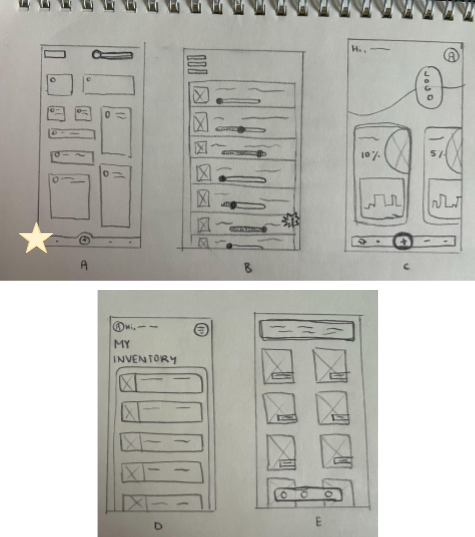
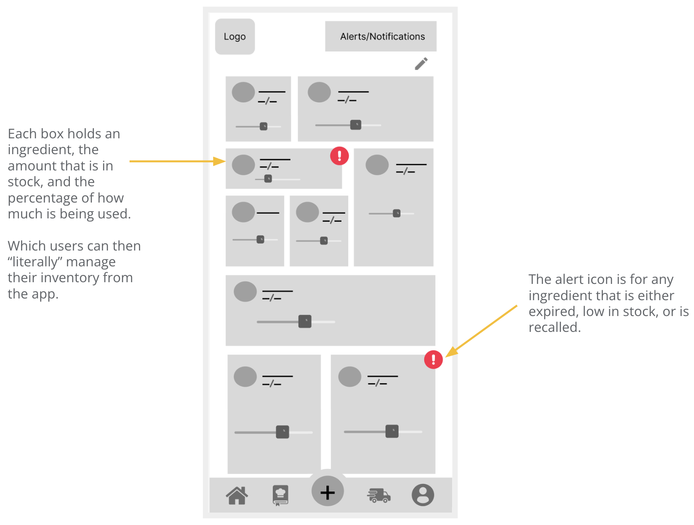
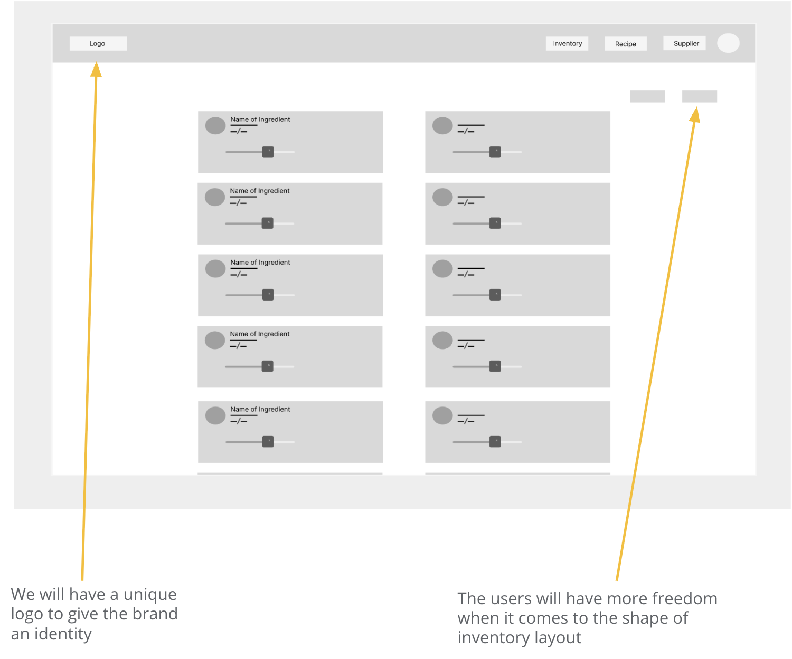

project overview

Pantry Co-pilot is a virtual inventory management app and website for starting out food truck owners and even ones who have been in the industry for a while. This web application allows for users to manage their inventory in an easy, quick, and fun way to keep track of stock levels.
The problem:
For many food truck owners they often lack a formal inventory management system. Since storage is limited and the accessibility to purchase ingredients in bulk or receive a timely delivery has led to sporadic inventory tracking.

The goal:
Design a user-friendly Pantry Co-Pilot app and website that helps users manage food efficiently, reduce waste, and support their community by enabling food sharing and donations to local organizations.
user research

From speaking with local food truck owners in my city, many have highlighted that the biggest issue they have is finding ways to manage their inventory that is practical, organized, and does not disrupt business hours.
Pain Points:
Organization
For many inventory management apps, some users feel that they do not have a sense of organization when it comes to input information.
Interaction
Often there are many options and choices that are either unnecessary or mandatory for one to complete the task.
Experience
There are not many inventory management apps focused on the food truck industry.
Persona:
After conducting interviews with my local food trucks, I defined target persona Dylan (Food truck owner, 25) to gain a stronger understanding of my primary users and prioritize goals based on their needs.
User Journey Map:
Mapping out the flow of Dylan’s user journey revealed the benefits of creating an app for food truck owners to help manage their inventory as well as streamlining the process of managing and delivering orders as well.
starting the design
Site Map:
I made it my focus that both the app and website would have a similar navigation path. My goal here was to make organized information architecture decisions that would improve overall website navigation.
App's Paper Wireframe:
I first focused on the app format. I created five distinct iterations of the homescreen, allowing me to thoroughly address user pain points. I prioritized the homescreen design since it serves as the main interaction hub, incorporating intuitive navigation buttons to enhance the user experience.
I chose design A, since I wanted my homescreen to have a gamification element where the user can edit the layout of their ingredients to match exactly how it is placed in their inventory; creating a more unique personal touch.
When focusing on creating the paper wireframe for the website, my main goal was to have a similar layout as the app. For the home screen, I focused on trying to combine all three main features onto the same page.
Digital Wireframes:
 Low-fidelity Prototype:
The navigation on this app is simple and intuitive, where carefully chosen icons clearly indicate the purpose of each screen. I incorporated both vertical and horizontal scrolling patterns throughout my design to maintain a natural, fluid experience.
While for the website it mirrors exactly how the app flow is as well.

Usability study:
Parameters:
Study Type
Moderated usability study

Location
San Francisco, In-Person

Participants
5 participants

Length
20-30 minutes
App Findings:
- Users felt the "+" button should first offer a choice before proceeding directly to adding an ingredient.
- Users expressed a desire for a more game-like feel within the app.
- Users wanted an option to add an ingredient to a grocery list instead of being forced to purchase it immediately.
Website Findings:
- Users suggested the website's main focus should be shifted more towards promoting the mobile app.
- Users mentioned there should be a feature to try out the app on the website before downloading it.
refining the design
App Mock-up and High-Fidelity Prototype:
User feedback showed a preference for a gaming-style UI, which shaped the app’s design. The mockups reflect this with features like customizable profiles, inventory layouts, and playful icons.
Website Mock-up and High-Fidelity Prototype:
Based on usability study feedback about the website's focus, I redesigned it to better highlight the app and clearly communicate our mission.
Accessibility Considerations:
All buttons and icons have accompanying text labels that describe their functionality.
For the app, there is a language accessibility setting so all users can navigate throughout the app in their preferred language.
I organized content using hierarchical headings, with different text sizes to create visual emphasis and structure.
going forward

Takeaways: Impact
Many of our target users report smoother, less stressful daily operations thanks to the app. As Dylan G. shared,
“Before this app, I was constantly running out of ingredients mid-shift or ordering too much that would go bad. Now I can check my inventory levels right from my phone while I'm prepping in the morning. Total game-changer for my business.”

Takeaways: What I learned
The importance of integrating user feedback throughout the design process to create a more intuitive and customizable user flow. I also gained experience in developing a companion website that not only promotes the app but also serves as a valuable channel for collecting ongoing user insights and engagement.
Next Steps:
-
1
Conduct another round of usability testing for both the website and the app before launch.
-
2
Add a tutorial or interactive demo on the website to let users try out the app.
-
3
Include a usage analytics and planning feature in the app to track ingredient patterns by day, week, or season.
-
4
Integrate sales data to help predict inventory needs more accurately.